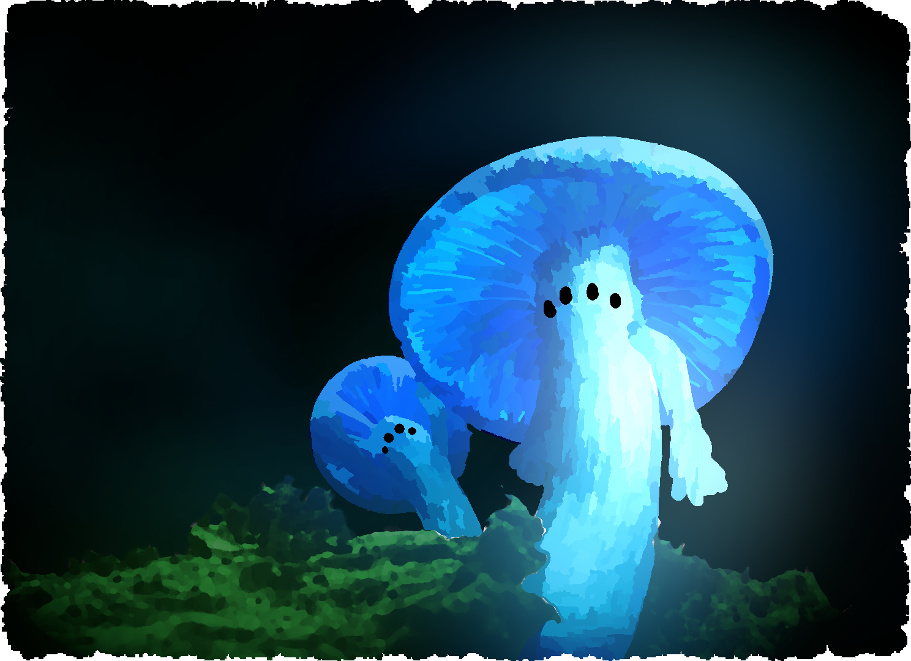

Your wrists ache from the cold iron chains. The last thing you remember is the old man's touch on the mountain trail—that surge of strange energy coursing through your body. Now you're here, in this damp cave, the smell of earth heavy in your lungs. How long were you unconscious? Five hours? Five days?
As a Sherpa, you've guided countless travelers through mountain passes. You know the Himalayas like your own heartbeat. But this... this is something else entirely. The old man spoke of "ancient guardians" and "sleeping bones." At the time, it sounded like fever dreams. Now, trapped beneath tons of rock, his words feel like prophecy.
The Guardian's Challenge
Ancient symbols glow faintly on the cave walls—a grid pattern, nine squares arranged in perfect order. Your mathematical mind recognizes it immediately: a logic puzzle, older than memory. The old man said you carry "the key of numbers." Perhaps this is what he meant.
You must solve this puzzle to break free from your chains and unlock the deeper passages. The Guardian tests all who enter these depths.
The Guardian's Test
Use your logic to defeat the ancient puzzle
Your turn (X)
The chains shatter! The passages ahead open to your will.
What Lies Ahead
Breaking the chains is only the beginning. Somewhere in these depths, the Skeleton King waits—ruler of this forgotten underworld. The old man's words echo in your mind: "the sleeping bones." You must descend deeper, find allies, and uncover the truth about why you were brought here.

The Old Man's Echo
"You carry the key of numbers, young Sherpa. Only with logic and courage can you face what sleeps below..."
Roku's Voice (distant)
"Is someone there? I hear footsteps... If you can hear me, head toward the crystal light. We need to talk."
Ancient Inscription
"Those who solve the Guardian's test may pass. Those who fail remain forever bound."